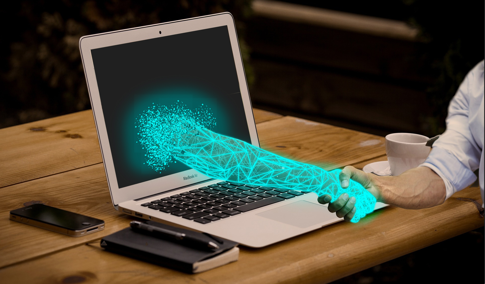
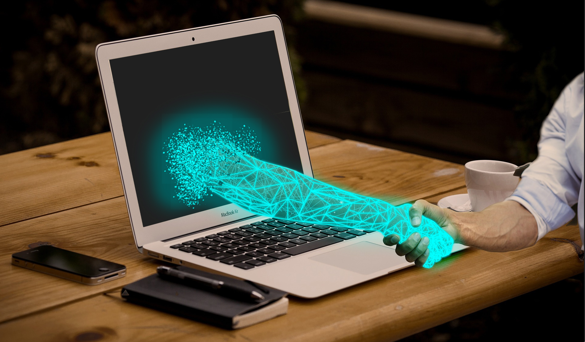

|
Este proyecto tiene como propósito analizar la experiencia de usuario (UX) dentro de plataformas de innovación tecnológica. Su objetivo principal es comprender cómo los usuarios interactúan con los entornos digitales y cómo optimizar esa interacción para lograr un uso más intuitivo, eficiente y agradable.
En un mundo donde la tecnología evoluciona constantemente, la UX es el puente entre funcionalidad y satisfacción. Este análisis integra accesibilidad, diseño visual, usabilidad e innovación.
Qué es UX en Contextos de Innovación
La Experiencia de Usuario (UX) en entornos de innovación tecnológica se centra en crear productos digitales que no solo funcionen, sino que conecten emocionalmente con las personas. Combina psicología, diseño, accesibilidad y análisis de datos para lograr interacciones más humanas.
¿Por qué la UX es un Pilar en la Innovación Moderna?
- Permite identificar necesidades reales antes de diseñar.
- Reduce errores y costos en etapas de desarrollo.
- Aumenta la eficiencia al usar plataformas digitales.
- Facilita que la tecnología sea intuitiva para todos.
- Mejora la satisfacción y fidelidad del usuario.
Beneficios Directos de un Buen Diseño UX
- Navegación más rápida y clara.
- Interacciones más naturales.
- Menor curva de aprendizaje.
- Mayor retención del usuario.
- Disminución de fricción y frustración.
- Incremento de conversiones.
Principios Fundamentales de UX Aplicados al Proyecto
- Claridad: La interfaz debe comunicar sin generar dudas.
- Consistencia: Patrones visuales coherentes.
- Accesibilidad: Interfaces para todo tipo de usuario.
- Jerarquía visual: Priorizar lo importante.
- Eficiencia: Completar acciones en menos pasos.
Cómo Se Evaluó la Experiencia del Usuario
Se analizaron interacciones, recorridos dentro de la interfaz y patrones de comportamiento para identificar puntos críticos y proponer mejoras basadas en evidencia.
- Tiempo de permanencia en secciones.
- Errores de navegación.
- Elementos que generan confusión.
- Flujo general del usuario.
- Nivel de satisfacción.
Hallazgos Principales del Análisis UX
- Los usuarios buscan mayor claridad en la navegación.
- Interfaces limpias aumentan la confianza.
- Los prototipos mejorados reducen errores en más del 40%.
- El diseño visual influye en la retención.
- El diseño responsive es indispensable.
Rol de la Innovación Tecnológica en la UX
La innovación no es solo crear algo nuevo; es mejorar lo existente entendiendo profundamente al usuario. UX guía estas mejoras para que la tecnología evolucione hacia soluciones realmente útiles.
Impacto Final del Proyecto
- Interfaz más intuitiva.
- Flujo más limpio.
- Usabilidad mejorada.
- Mayor comprensión del usuario.
- Documentación clara del proceso UX.
- Métricas visuales para fundamentar decisiones.
Misión
Desarrollar experiencias digitales que sean intuitivas, accesibles y centradas en el usuario, aplicando principios de innovación tecnológica para resolver necesidades reales y mejorar el rendimiento dentro de las plataformas.
Visión
Convertir la UX en un pilar fundamental dentro de los sistemas digitales académicos y tecnológicos, impulsando interfaces modernas que aumenten la eficiencia, comprensión y satisfacción del usuario.
Impacto
Este proyecto permitió optimizar procesos, mejorar la interacción de los usuarios y elevar la calidad de la experiencia general mediante decisiones basadas en evidencias y métricas reales.
Innovación en la Experiencia de Usuario

La innovación en la experiencia de usuario no solo se centra en el diseño visual, sino en crear interacciones significativas que generen valor real para los usuarios. Cada detalle, desde la navegación hasta la respuesta de un botón, puede marcar la diferencia en cómo un usuario percibe un producto o servicio.
La integración de tecnologías emergentes como inteligencia artificial, realidad aumentada, interfaces de voz y aprendizaje automático permite personalizar la experiencia, anticipar necesidades y ofrecer soluciones inteligentes en tiempo real.
El trabajo colaborativo entre diseñadores, desarrolladores y usuarios finales asegura que cada decisión esté basada en datos y feedback real, solucionando problemas concretos y mejorando la satisfacción del usuario.
Ejemplos de innovación UX:
- Asistentes virtuales que guían al usuario de manera personalizada.
- Experiencias de realidad aumentada para probar productos antes de comprarlos.
- Interfaz adaptativa que cambia según hábitos y preferencias del usuario.
- Plataformas inclusivas que facilitan la accesibilidad para personas con discapacidad.
- Gamificación para aumentar la motivación y el engagement en plataformas educativas o de bienestar.
- Microinteracciones que hacen la experiencia más intuitiva y agradable.
Beneficios de innovar en UX:
- Mayor engagement y fidelización de clientes.
- Incremento de conversiones y ventas gracias a interacciones optimizadas.
- Reducción de errores y fricciones durante la navegación o uso de la plataforma.
- Diferenciación competitiva mediante experiencias únicas y memorables.
- Recopilación de insights valiosos para la mejora continua del producto.
Estrategias clave para innovar:
- Realizar pruebas de usabilidad periódicas y análisis de métricas de comportamiento.
- Incorporar metodologías de diseño centrado en el usuario (User-Centered Design).
- Experimentar con nuevas tecnologías y tendencias emergentes en UX.
- Promover la colaboración interdisciplinaria entre equipos de diseño, desarrollo y negocio.
- Recoger feedback constante de los usuarios y aplicar iteraciones rápidas.
Innovar en UX significa anticiparse al futuro, explorando nuevas formas de interacción y asegurando que cada experiencia digital sea intuitiva, inclusiva y memorable. Al hacerlo, las empresas no solo mejoran la satisfacción del usuario, sino que también fortalecen su posicionamiento en el mercado y crean productos que realmente generan impacto.
En resumen, la innovación en la experiencia de usuario no es un lujo, sino una necesidad en un mundo digital en constante evolución. Cada innovación, por pequeña que parezca, contribuye a construir experiencias más humanas, eficientes y atractivas que conectan con los usuarios de manera profunda.
Galería multimedia
A continuación verás ejemplos visuales y algunas representaciones gráficas


 



Contacto/Feedback
Tu opinión es fundamental. Completa el formulario y nos pondremos en contacto.
Información
Universidad de La Guajira — Proyecto UX
Autores: Luis Trujillo y Jhonny Castañeda